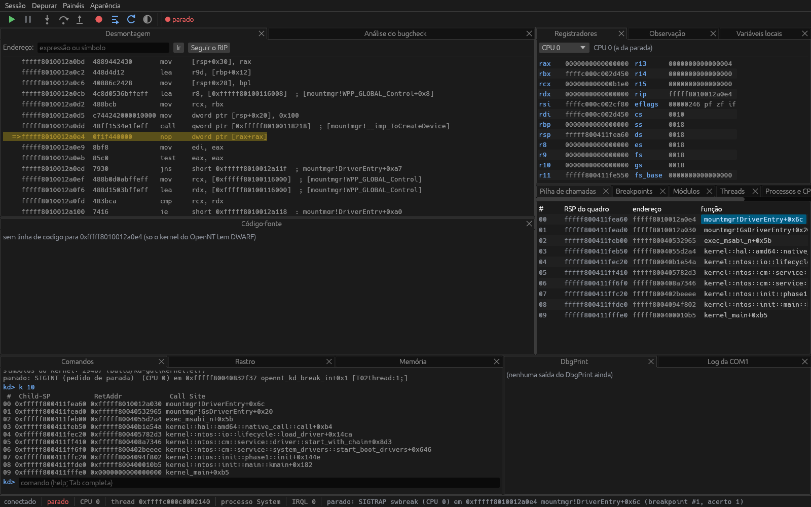
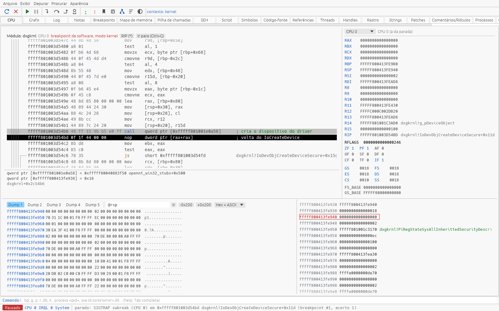

OpenNT
O OpenNT é um kernel compatível com o Windows NT para x86-64, escrito em Rust. Ele carrega os binários reais da Microsoft — drivers, o smss.exe, o csrss.exe e o win32k.sys — e implementa só o lado do kernel: os exports do ntoskrnl.exe, as chamadas de sistema e as estruturas do NT.
ntoskrnl.exe do Windows 10 22H2 o kernel também exporta (70,2%)15de 31 componentes do kernel funcionam com teste; 15 parciais93testes de boot no QEMU: 91 cenários e 2 suítes completas, validados por cargo xtask test-allMarco atual
Na sessão 0, o wininit.exe real cria o services.exe e o lsass.exe reais. O lsass instala o banco de política e o banco de contas de um sistema novo, inicializa a auditoria, as sessões de logon, as credenciais e os pacotes de segurança e publica as interfaces RPC do LSA; o services.exe consulta o domínio da conta no lsass, publica a interface RPC do gerenciador de serviços e cria os svchost dos grupos DcomLaunch e rpcss com o token do logon de serviço; sobem o Power, o DcomLaunch, o RpcEptMapper e o RpcSs, e o Local Session Manager sobe no svchost do DcomLaunch e sinaliza o TermSrvReadyEvent. Na sessão 1, o winlogon.exe real registra o processo de logon pelo RPC de kernel do msrpc.sys, abre as Desktops Winlogon, Disconnect e Default da WinSta0 dele e chama o SwitchDesktop; o InitVideo da sessão carrega o cdd.dll sobre o adaptador de renderização do BasicRender.sys e o win32k desenha o ponteiro do mouse na tela pelo BasicDisplay.sys (o primeiro pixel). O LSM conecta a sessão 1 ao console pelo csrss dela, e o winlogon carrega o tema e cria o dwm.exe e o LogonUI.exe reais.
Prova: o teste logonui.
Sem captura ainda: cargo xtask capturas --only logonui
Próximo
O dwm.exe e o LogonUI.exe seguirem até a tela de logon: o dwm compõe sobre o adaptador WARP do BasicRender a interface XAML que o LogonUI mostra.
Marcos
Os que rodam são provados por um teste de boot; os outros ainda são alvos. A lista completa, binário por binário e com as capturas de tela, está em O que roda.
O smss.exe real é o primeiro processo: monta a sessão e cria o smss da sessão, que carrega o win32k.sys e cria o csrss.exe real, todos com a ntdll real.
O smss da sessão carrega o win32k.sys, o win32kbase.sys e o win32kfull.sys; a thread do csrss vira thread GUI e o NtGdiInit e o NtUserInitialize são atendidos.
Com o BasicDisplay.sys sobre o dxgkrnl.sys, a sessão do win32k faz o dxgkrnl iniciar o adaptador, que usa o framebuffer VBE 1024x768 e cria o \Device\Video0; o InitVideo da sessão 0 termina e o NtUserInitialize do csrss volta com sucesso.
O wininit.exe real registra o processo de logon, cria a WinSta0 e as Desktops Winlogon, Disconnect e Default, chama o SwitchDesktop, sobe o servidor RPC \PIPE\InitShutdown e cria o services.exe.
O LSA do lsass.exe
RodaO lsass.exe real instala o banco de política e o banco de contas de um sistema novo, inicializa a auditoria, as políticas de acesso central, as sessões de logon, as credenciais e os pacotes de segurança (negoexts, kerberos, msv1_0), publica as interfaces RPC do LSA e registra a extensão de consulta.
O services.exe real consulta o domínio da conta no lsass, publica a interface RPC do gerenciador de serviços, sobe o servidor do SCE e o gerenciador de drivers de modo usuário e roda o início automático, com o logon de serviço dos serviços da cadeia do LSM no lsass.
O services.exe cria o svchost do grupo DcomLaunch com o token do logon de serviço; o serviço Power (umpo.dll) conecta ao \PowerPort do kernel, sobe o endpoint umpo e lê o NtPowerInformation de modo usuário. O umpo manda pelo \PowerPort os valores do esquema de energia ativo (esquema de energia ativo), que o kernel grava nas configurações de power setting.
O svchost do DcomLaunch carrega o lsm.dll; o LSM conecta ao smss pelo \SmApiPort, cria a \SmSsWinStationApiPort, sobe o \RPC Control\LSMApi e sinaliza o TermSrvReadyEvent.
O LSM manda ao csrss da sessão 1 o DoConnect do console: o winsrvext.dll passa pelo NtUserRemoteConnect do win32k, conecta a thread dele ao user32, carrega os cursores e os ícones do sistema e cria a \RPC Control\AutoRotationApiPort.
Depois da conexão ao console, o winlogon.exe da sessão 1 carrega o uxinit.dll e o tema Aero e o dwminit.dll cria o dwm.exe real da sessão.
Depois da conexão ao console, o winlogon.exe da sessão 1 reabre as Desktops da WinSta0 e cria o LogonUI.exe real da sessão.
O winlogon.exe real da sessão 1 registra o processo de logon pelo RPC de kernel do msrpc.sys, abre as Desktops Winlogon, Disconnect e Default da WinSta0 da sessão dele e chama o SwitchDesktop.
O InitVideo da sessão 1 carrega o cdd.dll sobre o adaptador de renderização do BasicRender.sys, e o win32k desenha o ponteiro do mouse pelo BasicDisplay.sys: o primeiro pixel na tela.
Tela de logon
RodaO xtask lê a tela do QEMU e espera a tela de logon depois do primeiro pixel: uma imagem cobrindo a tela, com 8 cores ou mais, igual em duas leituras seguidas.
O Ctrl direito com o Scroll Lock duas vezes faz o i8042prt.sys real chamar KeBugCheckEx(0xE2); o kernel congela os processadores, desenha a tela azul do Windows 10 no framebuffer de boot (":(", os textos da instalação, o progresso e o código de parada), roda os callbacks dos drivers e para.
O ntfs.sys monta o volume NTFS 3.1 do segundo disco, lê um arquivo pelo Cache Manager e cria, grava e relê outro.
O i8042prt.sys e o kbdclass.sys sobem pelo PnP e as teclas chegam ao shell pela IRQ 1, pela ISR e pelo DPC do driver.
Na controladora xHCI do QEMU, com interrupções MSI-X, o usbxhci.sys, o usbhub3.sys, o hidusb.sys e o kbdhid.sys e o mouhid.sys sobem pelo PnP, e a tecla mandada pelo monitor do QEMU chega pelo teclado USB ao kbdclass.
Dois processos de usuário conversam pelos npfs.sys e msfs.sys: pipes de mensagens e de bytes, E/S assíncrona e mailslot.
O PnP sobe intelide, atapi, disk e partmgr na controladora do QEMU, e os setores lidos pela pilha conferem com os do disco.
O NtShutdownSystem avisa os drivers, o ntfs.sys descarrega o volume, o Registro vai para o disco e a máquina desliga pela ACPI (ou reinicia); o boot seguinte encontra o que foi gravado.
O PnP sobe o storport.sys e o stornvme.sys no controlador NVMe do QEMU; o disk.sys lê o MBR pela LUN do storport, o volume.sys inicia o volume da partição, o mountmgr.sys lhe dá a letra E: e o ntfs.sys o monta, lê e grava arquivos.
Com --tpm o QEMU expõe um TPM 2.0 CRB sobre um simulador de TPM; o acpi.sys relata o MSFT0101, o PnP sobe o tpm.sys pelo tpm.inf e o kernel manda TPM2_Startup, TPM2_GetRandom e TPM2_GetCapability pelo tbs.sys.
O acpi.sys carrega a DSDT do QEMU e relata o barramento PCI; o pci.sys enumera as funções, e os árbitros e tradutores dos dois dão as portas, a memória e as IRQs de cada dispositivo.
Área de trabalho na tela
Não rodaAinda não há sessão gráfica: nenhuma janela é desenhada.
Programas Win32 (.exe)
Não rodaO smss.exe, o csrss.exe, o wininit.exe, o winlogon.exe, o services.exe e o lsass.exe reais rodam no boot com o smss.
Com --net, o E1G6032E.sys sobe na placa e1000 pelo PnP e o NDIS relata o enlace conectado.
Ferramentas
As ferramentas de desenvolvimento do próprio OpenNT, com código no repositório.
opennt-dbg
O depurador gráfico do kernel, no estilo do WinDbg: pilha correta através dos drivers da Microsoft (.pdata e PDBs públicos), objetos do NT (processo, thread, IRP, dispositivo, driver, handle, structs do PDB), análise automática do bugcheck, breakpoints condicionais, de dados e por carga de módulo, observação com structs tipadas, variáveis locais pelo DWARF, memória com busca, rastro de instruções com árvore de chamadas e comparação, em painéis encaixáveis com o arranjo salvo e tema claro e escuro. Fala com o depurador do próprio OpenNT pela COM2 (--kd=com2).
cargo run -p opennt-dbg --release -- --launch cargo run -p opennt-dbg --release -- --connect=127.0.0.1:1234Teste:
kd
opennt-dbg parado dentro do mountmgr.sys real (o DriverEntry chamando o IoCreateDevice), com a pilha pela .pdata e os nomes do PDB público opennt-re
O depurador de engenharia reversa, para o kernel e os processos de usuário: aba CPU com desmontagem, colchetes das funções e dos laços, comentários das chamadas com os argumentos decodificados, referências cruzadas (X), destaque (H), registradores com SSE, x87, DR0-DR7 e a caixa dos argumentos x64, Dump em vários formatos e pilha; editor de breakpoints, breakpoints de hardware por processo e de memória por página; grafo, buscas, mapa de memória, threads, patches e roteiros; o servidor MCP na própria janela. Também: monitor de APIs (cada export do ntoskrnl e da HAL chamado pelos drivers, com os argumentos, o NTSTATUS, a thread e o chamador, filtros e CSV), rastreador de IRPs (a vida de cada IRP pelas pilhas de dispositivos), snapshots da máquina e gravação e reprodução do QEMU, ver como tipo (qualquer tipo do PDB em árvore editável, com listas), exploradores do Registro, do namespace e dos arquivos do convidado, preferências com editor de atalhos e o banco por módulo.
cargo run -p opennt-re --release -- --launch cargo run -p opennt-re --release -- --launch --initial-process=smss --smp=1 cargo run -p opennt-re --release -- --launch --vm-snapshotsTeste:
kd
opennt-re parado dentro de um driver real: colchetes das funções e dos laços, comentários automáticos e o destaque de um registrador opennt-mcp
O servidor MCP para agentes de IA dirigirem o depurador (JSON-RPC 2.0 por stdio ou HTTP em 127.0.0.1): abrir o OpenNT, parar, continuar, passos, registradores, memória, desmontagem com a análise automática, símbolos, módulos, processos, threads, breakpoints com condição e log, pilha, buscas, referências cruzadas, vistas do NT, rastro, espera de um marcador na COM1, roteiros e a tela do convidado em PNG; e o monitor de APIs, o rastreador de IRPs, os snapshots, os passos para trás da reprodução, a vista como tipo e os exploradores do Registro, do namespace e dos arquivos.
cargo build -p opennt-mcp --release target/release/opennt-mcp --root=.Teste:
kdcargo xtask debug
O mesmo depurador em modo texto, com o mesmo código: os comandos do WinDbg (k, r, db/dq, bp, bu, ba, bl, g, p, t, gu, lm, lmv, dt, sxe, !process, !thread, !irp, !devobj, !drvobj, !object, !handle, !analyze), o rastro de instruções (trace), as consultas do OpenNT, o monitor de APIs (apimon), o rastreador de IRPs (irptrace), o Registro (reg, regv), o namespace (objdir), os arquivos (fsls, fscat), a vista como tipo (dtv), os snapshots (snap) e os passos para trás (rstep, rcont); com --script, um roteiro roda como teste.
cargo xtask debug cargo xtask debug --connect=127.0.0.1:1234Teste:
kd


Fases
O escopo de cada fase está no roadmap.
- Fase 1 base concluída
- Fase 2 memória e CPU concluída
- Fase 3 objetos e executive concluída
- Fase 4 I/O e armazenamento concluída
- Fase 5 Registro e serviços concluída
- Fase 6 loader PE e ntoskrnl em andamento
- Fase 7 modo usuário em andamento
- Fase 8 vídeo, arquivos e rede planejada
Experimentar
cargo xtask run # o shell numa janela do QEMU
cargo xtask test-all # a validação inteira (68 execuções)
cargo xtask status # regenera este sitePrecisa de Rust nightly e do QEMU; os binários da Microsoft vêm do Windows da máquina de build e nunca entram no repositório.